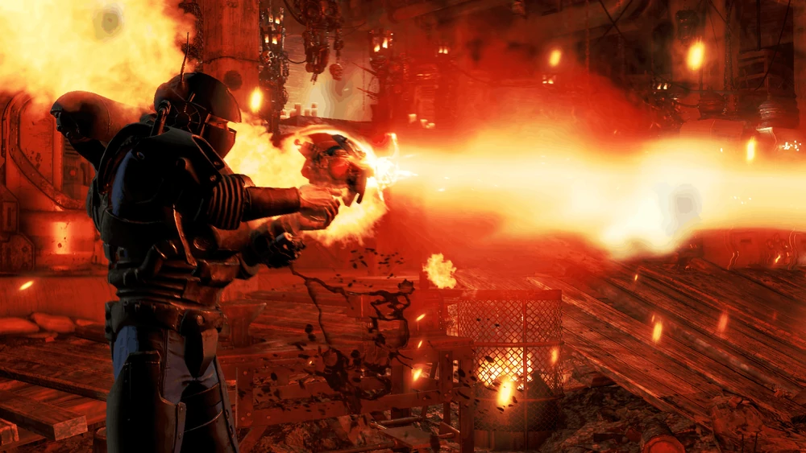
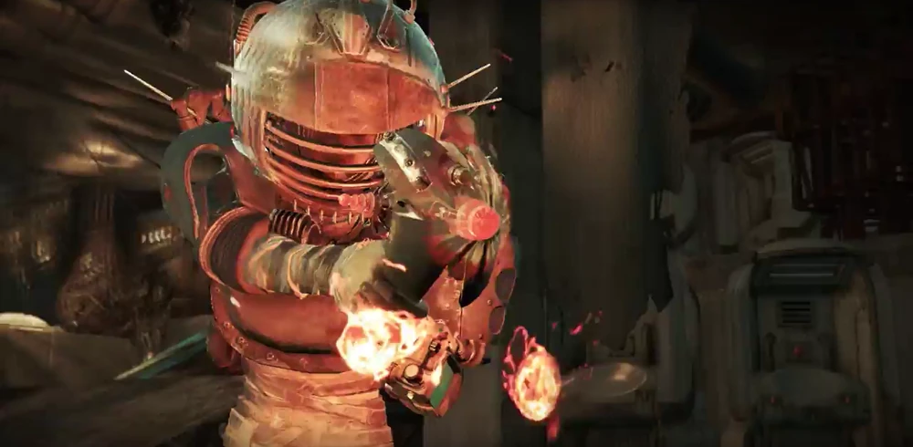

Recovered Assaultron Head
(回収されたアサルトロン頭部)
特性
この回収されたアサルトロンの頭部は、非オートマチックのエネルギーピストルのように発射されます。
リロードを繰り返すことで入力をチャージできます。
チャージ数が多いほど、ダメージが高くなります。
使用すると、使用者は放射能ダメージを受けます（被曝します）。
チャージ数や武器レベルに関わらず、自傷ダメージは同じです。
エンチャント効果により、50の放射能被曝ダメージを受けます。

レジェンダリークラフトを除き、回収されたアサルトロン頭部はいかなる方法でも改造することはできません。
偽物のアサルトロン頭部は塗装ではなく、独立したアイテムとして個別に作成されます。
ステータス
- レベル: 25 / 35 / 45
- ダメージ: 93 / 119 / 152（エネルギー）
- マガジンサイズ: 5
- 命中率: 63
- APコスト: 30
クラフト
この武器は武器作業台で作成可能です。
作成には設計図「設計図：アサルトロン頭部」を習得している必要があります。
ロケーション
死んだアサルトロンの死体から時折見つかることがあります。
注記
変異「絶縁体」の影響を受けます。
発射体は着弾時に小さな装飾的な爆発を引き起こします。
一部のアサルトロン頭部は、発射時に使用者を被曝させないものがあります。
これらはレガシーコンテンツと見なされ、極めて稀です。
変更履歴
- 爆発のレジェンダリー効果が付かなくなりました。
爆発するアサルトロン頭部は現在、削除されたコンテンツとなっています。 - クラフト時にPerk「Super Duper」の影響を受けなくなりました。
これまでは、これを利用してねじを複製することが可能でした。
舞台裏
アサルトロン頭部は、Fallout 4 の同等品よりもリロードがはるかに遅いです。
偽物のアサルトロン頭部は、標準のアサルトロン頭部の動的なアタッチメントの組み合わせバリエーションとしてリストされていますが、使用されていません。
この古いバージョンのシープスカッチバリエーションは、モデルの一部をそれぞれ追加する6つの隠しモジュールに分割されていました。
さらに、地面を炎上させる偽物のシープスカッチが使用するレーザーを模倣し、シビア・ベータ・ウェーブ・チューナーの属性を適用する予定でした。
バグ
スプリントすることでリロードアニメーションをキャンセルでき、意図されたよりも速く武器をリロードすることが可能です。
回収されたアサルトロン頭部は、Fallout シリーズの中でも特にユニークで、「ハイリスク・ハイリターン」を体現した武器の一つです。
最大火力のロマン: リロードを繰り返してチャージを最大まで溜めた時の一撃は、エネルギー兵器の中でもトップクラスの瞬間火力を誇ります。
特に「クアッド」のレジェンダリー効果が付いた場合、その威力はさらに跳ね上がり、ボス戦での切り札になり得ます。
ただ・・・ロマンしかありませんが…。
被曝という代償: 発射するたびに放射能ダメージを受けるという強烈なデメリットは、この武器が単なる道具ではなく、破損したロボットのパーツを無理やり武器に転用しているという設定を見事に表現しています。
不気味な外見: 切断されたアサルトロンの頭部をそのまま手持ち武器として使うビジュアルは、狂気と実用性が入り混じったウェイストランドらしいデザインであり、一人称視点で装備した時のインパクトは絶大です。

This article uses material from the Fallout wiki at Fandom and is licensed under the Creative Commons Attribution-Share Alike License.
> COMMENTS